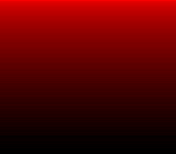

|
OpenSNES
Modern Open-Source SNES Development SDK
|
|
OpenSNES
Modern Open-Source SNES Development SDK
|

Port of krom (Peter Lemon)'s RedSpace9BitHDMA demo (PeterLemon/SNES, PPU/HDMA/RedSpace9BitHDMA). The SNES has 5 bits per color channel; this classic trick fakes more: HDMA channel 0 rewrites the backdrop color every scanline while channel 1 rewrites INIDISP master brightness (16 levels) on the same line. Red level × brightness, plus per-line jitter in both of krom's tables, dithers the 224-line ramp into far more perceptual steps than 32 — "9-bit" color. Compare with hdma_indirect_gradient (pure 5-bit ramp): this one has visibly finer banding.
There is no BG at all (TM=0) — the whole image is the backdrop — and the demo never calls setScreenOn(): INIDISP is owned by the HDMA stream.
Measured parity: 0 differing pixels against krom's ROM (both rendered in luna v1.9.0) — the tables are his exact bytes, extracted verbatim.
| Register | krom | this port |
|---|---|---|
| DMAP0/BBAD0 | %011 / $21 | same (hdmaSetup(ch0, HDMA_MODE_2REG_2X, HDMA_DEST_CGADD, …)) |
| DMAP1/BBAD1 | %000 / $00 | same (hdmaSetup(ch1, HDMA_MODE_1REG, HDMA_DEST_INIDISP, …)) |
| HDMAEN | %11 | same |
| TM | 0 | same (setMainScreen(0)) |
| Tables | 224+224 entries | byte-verbatim (res/*.bin) |
console, dma, hdma